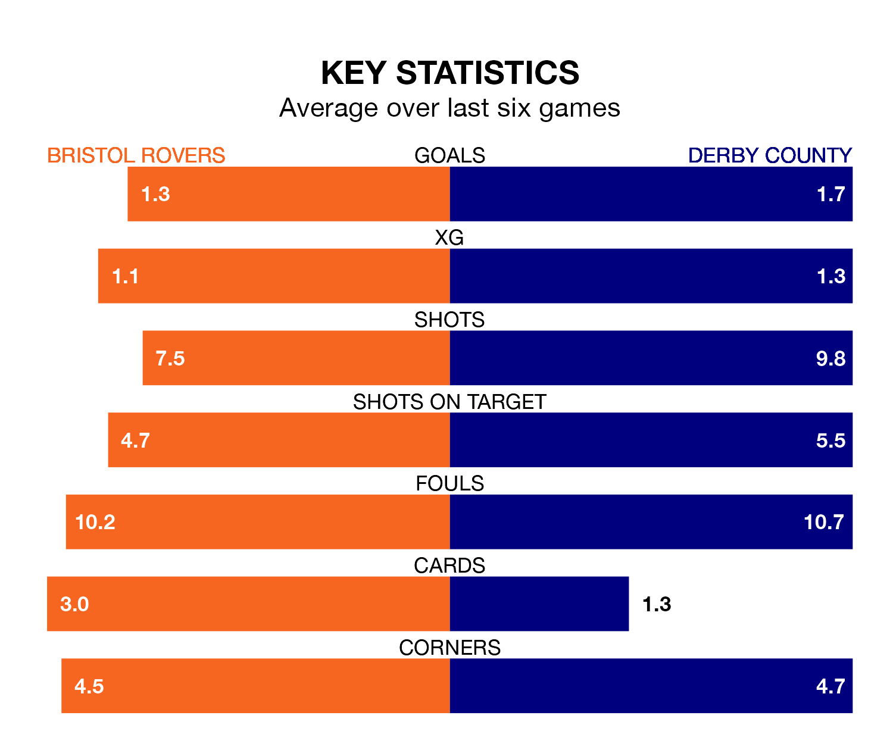

Bristol Rovers host Derby County on Saturday at the Memorial Stadium in EFL League One.
In their last league match, on March 2, Rovers beat Leyton Orient 1-0 away, with their goal scored by Chris Martin.
Derby also won, 3-0 at home against Port Vale, with Louie Sibley (two) and Dwight Gayle on the scoresheet.
With 63 goals in 36 games so far this season, Derby are scoring more than average in the league with 1.8 goals per game. And they are conceding fewer than average, letting in 33 goals at a rate of 0.9 per game.
Rovers are also above average scorers, with 1.4 goals per game, compared to a league average of 1.3. They have also conceded 1.4 goals per game.
County are third in the table after 36 games, of which they have won 21 and drawn six, earning 69 points.
The Gas are nine places behind the Rams in 12th, with 14 wins and seven draws putting them on 49 points.
With Joe Wildsmith between the sticks, the visitors can rely on one of the league's safest pair of hands. He has kept 13 clean sheets in his 30 appearances this season, and only two other 'keepers – Portsmouth's Will Norris and Lincoln City's Lukas Jensen – have been able to prevent the opposition scoring on more occasions in EFL League One.
In the home side's net, Matthew Cox has three clean sheets in 27 games. He has conceded a goal every 71 minutes, 60% more often than the 116 minutes between goals for Wildsmith.
In the last three years, Rovers and Derby have played each other on three occasions. Derby won two of them and they drew once.
Their last meeting was on November 25, when Derby won 2-1 at home.
Rovers are in mixed form in EFL League One, with three wins and three losses from their last six games.
With three wins and a draw over that period, Derby's form is slightly better – they have taken 10 points from 18, compared to Rovers' nine.
Saturday's match will be refereed by Lee Swabey, who has taken charge of nine EFL League One games so far this season, issuing two red cards and booking 52 players. He has awarded two penalties.
The last Rovers game Swabey refereed was a 2-1 home loss to Wycombe Wanderers on August 26. His last Derby match was their 1-0 win at home against Fleetwood Town on August 19.
Updated: 09:34 (UTC), 08/03/24